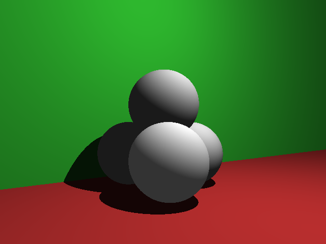
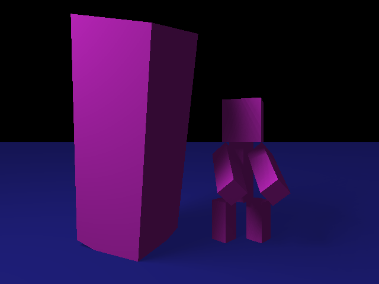
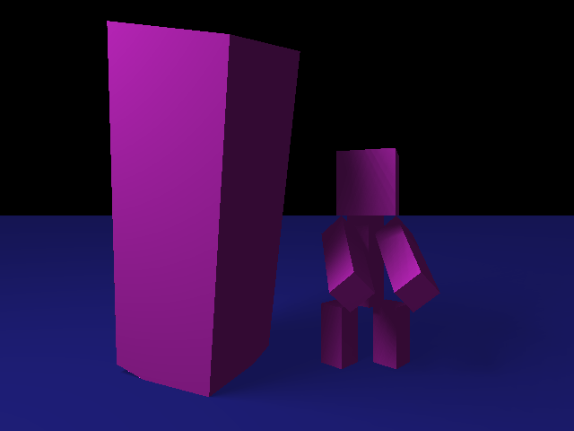
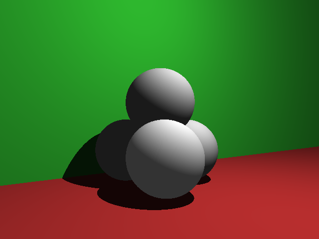
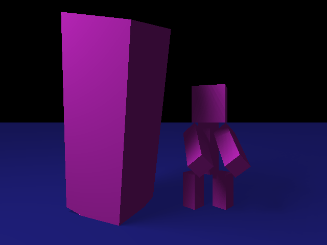

Here are some output images of soft shadows. The left side does not have soft shadows. The right side does have soft shadows.

 



A ray tracer starts from the camera's point of view and sends rays out into the world to see if it hits anything. If the ray hits something, we can determine the color based on the object's color, material, and reflectiveness. In this ray tracer, our input file is a POV ray file. This type of file contains info about the camera and other objects like geometric shapes. The output of the ray tracer is a static image based on the POV file and command line arguments. This program was written in C++ with the GLM library.
Code on GitHubFor the final addition to the ray tracer, I decided to do soft shadows. The concept is to treat our point lights as an area light in order to send multiple shadow feeler rays with that area light. After getting the color from those samples we can average them to get softer shadows.
Here are some output images of soft shadows. The left side does not have soft shadows. The right side does have soft shadows.

